채널: 레디포그로스 (Ready For Growth) | 길이: 16:51 | 날짜: 2026년 3월 9일
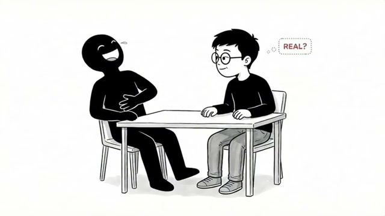
영상은 회식 자리 장면으로 시작한다. 누군가 던진 농담에 테이블 전체가 폭소한다. 그런데 주인공(이 영상을 보는 '당신')은 뭐가 웃긴지 모르겠다. 반박자 늦게 입꼬리만 올리며 따라 웃는다. 옆 사람이 눈물까지 흘리며 웃는 걸 보면서, 머릿속에는 전혀 다른 생각이 먼저 떠오른다.
"저 사람은 진짜 웃긴 걸까? 아니면 분위기에 맞추는 걸까?"
그러다 슬쩍 자리를 빠져나와 화장실로 간다. 거울 앞에 서서 물을 한번 틀고, 거울 속 자신을 보며 중얼거린다. 스크린샷에서는 웃으며 배를 잡고 있는 검은 실루엣 옆에, 안경을 쓴 주인공 캐릭터가 "REAL?"이라는 말풍선을 띄우며 진지하게 생각하는 장면이 묘사된다. 이 한 장면이 영상 전체의 핵심 질문을 압축한다 — 왜 나는 남들처럼 자연스럽게 반응하지 못할까?
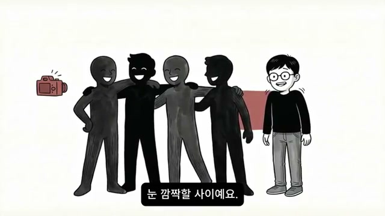
이 감각은 회식만의 문제가 아니다. 단체 사진을 찍을 때도 마찬가지다. 다른 사람들은 "찍는다"는 신호 하나에 눈 깜짝할 사이에 어깨를 붙이고 포즈를 잡는다. 그러나 당신은 어디에 서야 할지부터 모르겠다. 옆 사람과 어깨가 닿는 것이 어색하고, "웃어"라는 말에 웃긴 하지만 그 웃음이 내 얼굴에 제대로 붙어 있는 것 같지 않다.
찍힌 사진을 보면 즉시 안다. 다들 자연스럽고 밝은데, 나만 약간 어긋나 있다. 스크린샷에는 서로 어깨동무를 하며 환하게 웃는 실루엣 그룹 옆에, 주인공이 혼자 약간 떨어진 채 어색하게 서 있는 삽화가 등장하며, 자막에는 "눈 깜짝할 사이예요."라는 문장이 보인다. 다수에게는 즉각적이고 자연스러운 것이 이 사람에게는 매번 의식적으로 처리해야 하는 과제다.
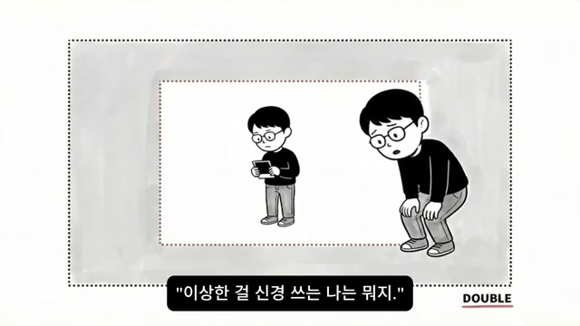
여기서 진짜 힘든 것은 단순히 사진이 어색하게 나왔다는 사실이 아니다. 그 사진을 바라보는 자신의 시선이 문제다. "또 나만 이상하네"라는 생각이 오는 것도 힘든데, 바로 다음 순간 또 다른 생각이 덮쳐온다.
"이상한 걸 신경 쓰는 나는 뭐지?"
이상함을 느끼는 것도 힘든데, 그걸 신경 쓰는 자기 자신이 또 한심하게 느껴지는 것이다. 화자는 이를 "감정이 두 겹"이라고 표현한다. 스크린샷에서는 그림 속 그림 형태로, 사진 속 작은 자신을 큰 자신이 허리를 숙여 들여다보는 구도가 등장한다. 하단 자막에는 "이상한 걸 신경 쓰는 나는 뭐지."라는 문장이 표시된다. 이것이 단순한 자기 비판을 넘어 '메타 자기 비판', 즉 자기 비판에 대한 자기 비판으로 이어지는 구조를 시각화한 것이다.
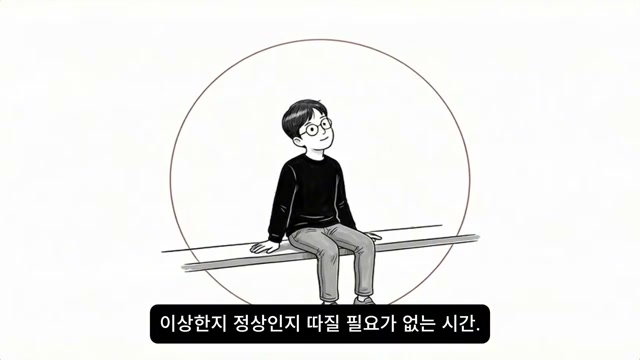
하지만 카페에 혼자 앉아 있을 때는 다르다. 노트북을 열고 이어폰을 끼고 좋아하는 음악을 틀어 놓으면 세상이 조용해진다. 창밖으로 지나가는 사람들을 멍하니 보다가 문득 떠오르는 생각을 메모장에 적는다. 별거 아닌 문장인데 적고 나면 마음이 풀린다.
스크린샷에서는 커다란 원 안에 평화롭게 앉아 있는 주인공이 묘사된다. 자막은 "이상한지 정상인지 따질 필요가 없는 시간"이라고 말한다. 이것이 바로 그 사람에게 가장 편안하고 온전한 시간이다.
그런데 누군가 말한다.
"너 왜 맨날 혼자야? 사람 좀 만나. 그러니까 우울한 거야."
그 말을 듣는 순간, 조용했던 시간이 깨진다. 화가 난다. 그러나 그 화를 낼 수가 없다. 상대는 걱정해서 한 말이기 때문이다. 그래서 화는 안으로 들어간다.
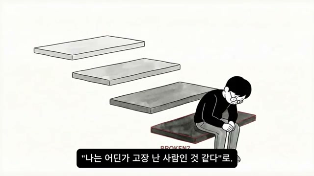
이 과정이 반복되면 감정은 더 깊은 곳으로 내려간다.
단순한 소외감이 아니라 존재 자체에 대한 의심이 된다. 스크린샷에서는 주인공이 고개를 숙인 채 계단 가장 낮은 칸에 앉아 있고, 배경에 "BROKEN?"이라는 글자가 흐릿하게 보인다. 이 문장은 아침에 지하철을 탈 때도, 점심을 혼자 먹을 때도, 퇴근 후 현관문을 닫을 때도 배경음악처럼 하루 종일 깔려 있다고 화자는 묘사한다.
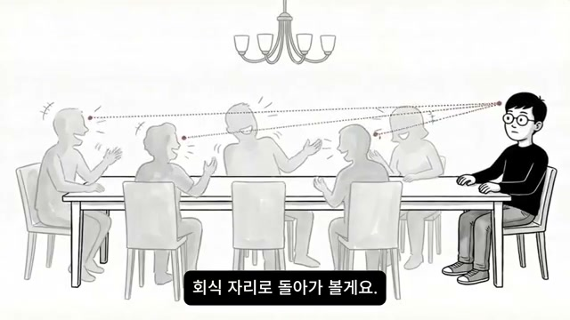
영상은 여기서 전환점을 맞는다. 화자는 묻는다: "이 문장이 왜 이렇게 자주, 이렇게 깊이 들어오는지 그 구조를 들여다본 적 있는가?" 그리고 회식 자리로 되돌아간다.
스크린샷에서는 회식 테이블 장면이 다시 등장하며, 주인공에게서 테이블 너머 각 사람에게 점선 화살표가 뻗어나가는 장면이 묘사된다. 자막은 "회식 자리로 돌아가 볼게요."라고 말한다. 이는 단순한 회상이 아니라, 그 순간 뇌에서 벌어지던 일을 분석하기 위한 해부의 시작이다.
누군가 농담을 던졌고 다들 웃었다. 그런데 당신의 뇌는 농담을 처리하기 전에 다른 것을 먼저 하고 있었다.
이것을 의식적으로 한 게 아니다. 그냥 그렇게 작동하는 것이다.
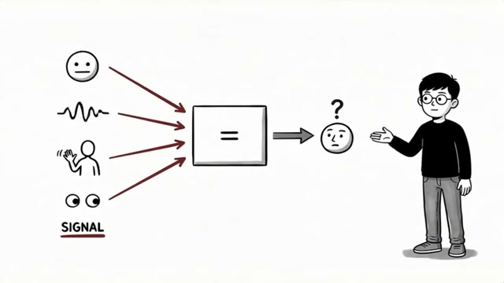
화자는 뇌의 구조를 설명한다. 사람의 뇌에는 주변 사람들의 반응을 실시간으로 감지하는 회로가 있다. 이 회로는 표정, 목소리, 톤, 몸짓, 시선 같은 신호들을 모아서 "지금 나는 어떻게 반응하면 맞는지"를 계산한다.
스크린샷에서는 이 과정이 다이어그램으로 시각화된다. 왼쪽에서 여러 신호들이 중앙 처리 박스로 들어오고, 오른쪽으로 반응이 출력되는 구조다. 입력 신호들로는 표정 이모티콘, 음파(목소리 톤), 몸짓하는 사람, 눈 모양이 표시되며 하단에 "SIGNAL"이라고 굵게 쓰여 있다.
대부분의 사람들은 이 회로가 대략적으로 작동한다. "다들 웃으니까 나도 웃자" — 이 정도면 충분하다. 그래서 빠르다. 고민할 게 없으니까. 그런데 이 회로의 감도가 유난히 높은 사람이 있다. 그것이 바로 당신이다.
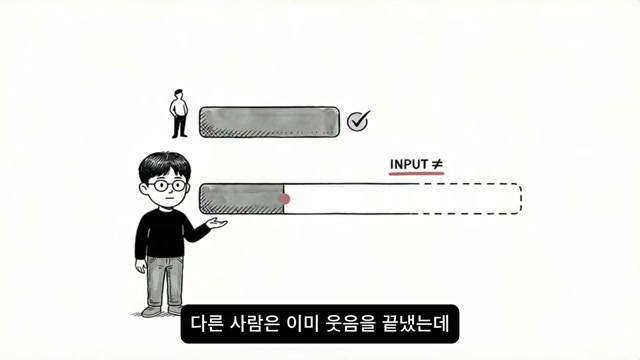
감도가 높은 사람의 뇌는 웃음의 톤, 눈빛의 미세한 변화, 대화 흐름 속에 숨은 불편함까지 전부 잡아낸다. 그러면 어떤 일이 벌어지는가?
다른 사람은 이미 웃음을 끝냈는데, 당신의 뇌는 아직 데이터를 처리하고 있다.
스크린샷에서는 이것이 명확하게 도식화된다. 위쪽 일반인의 처리 바(bar)는 짧고 이미 체크 표시가 되어 있다. 아래쪽 주인공의 처리 바는 훨씬 길고 아직 진행 중이다. 옆에는 "INPUT ≠"라고 적혀 있어, 동일한 상황에서 입력받는 정보의 양 자체가 다름을 강조한다.
화자의 결론: "반박자 느린 게 아니에요. 입력받는 정보의 양이 다른 거예요."
단체 사진에서 어색했던 것도 같은 원리다. 다른 사람은 "찍는다"는 신호에 바로 포즈를 만들었는데, 당신의 뇌는 '이 표정이 진짜인가'를 한 번 더 확인하고 있었던 것이다.
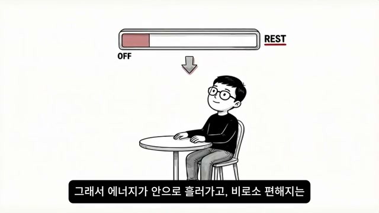
카페에서 혼자 있을 때 편했던 이유도 여기 있다. 혼자 있으면 이 고감도 회로가 쉰다. 감지할 신호가 없으니까, 에너지가 안으로 흘러가고 비로소 편해지는 것이다.
스크린샷에서는 이것이 배터리 바 형태로 시각화된다. 상단에 처리 바가 "OFF" 상태로 거의 비워져 있고, 화살표 아래로 카페에 혼자 앉아 있는 주인공이 편안한 표정으로 묘사된다. 오른쪽에는 "REST"라는 텍스트가 강조되어 있다. 자막은 "그래서 에너지가 안으로 흘러가고, 비로소 편해지는"이라고 말한다.
화자는 단언한다: "사회성 부족이 아니에요. 고감도 센서를 잠시 끄고 쉬는 시간이 필요한 거예요." 이 차이가 '소수의 고감도 뇌'에 대해 아무도 제대로 설명해준 적이 없었던 것이다. 다수의 뇌에 맞춰 설계된 세상에서 소수의 고감도 뇌가 같은 속도로 반응하지 못하는 건 고장이 아니다. 사양이 다른 것이다.
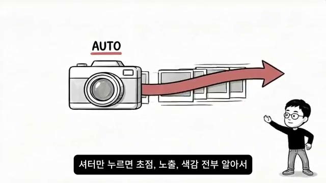
화자는 핵심 비유를 꺼낸다. 카메라의 자동(AUTO) 모드와 수동(MANUAL) 모드.
자동 모드는 빠르다. 셔터만 누르면 초점, 노출, 색감 전부 알아서 맞춰준다. 여행 가서 100장 찍고 괜찮은 거 골라서 올리고 끝. 대부분의 사람은 이 모드로 세상을 본다. 빠르게 읽고, 빠르게 반응하고, 빠르게 넘어간다.
스크린샷에서는 "AUTO"라고 쓰인 카메라에서 여러 장의 사진이 빠르게 연속 출력되는 모습이 묘사되고, 오른쪽 화자 캐릭터가 손짓으로 이를 설명한다. 자막은 "셔터만 누르면 초점, 노출, 색감 전부 알아서"라고 쓰여 있다. 이것이 다수의 뇌가 사회적 상황을 처리하는 방식이다.
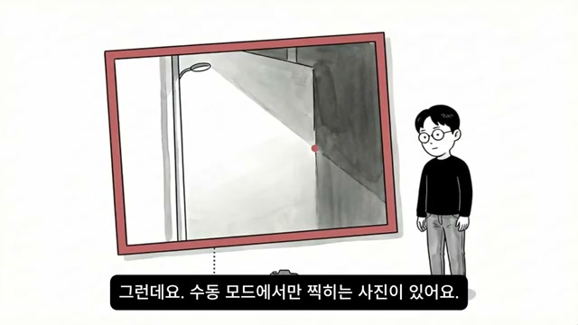
수동 모드는 다르다. 초점을 직접 맞추고, 노출을 직접 잡고, 구도를 직접 정한다. 한 장 찍는 데 시간이 걸린다. 자동 모드가 10장 찍을 동안 한 장도 못 찍을 수 있다. 옆에서 보면 답답하다. "그냥 셔터 누르면 되잖아."
그런데 수동 모드에서만 찍히는 사진이 있다.
스크린샷에서는 화자가 수동 모드 카메라로 찍은 사진을 들고 있는 장면이 등장한다. 화면 속 사진은 밤 골목의 가로등과 벽 그림자가 묘하게 공존하는 장면이다. 화자는 이를 구체적으로 묘사한다:
"새벽 4시 골목 끝 가로등 하나. 그 가로등이 벽에 만드는 그림자가 있는데, 선명한 경계와 안개처럼 번지는 부분이 공존해요. 자동 모드는 어두운 골목으로 처리하고 넘겨요."
자막은 "그런데요. 수동 모드에서만 찍히는 사진이 있어요."라고 말한다.
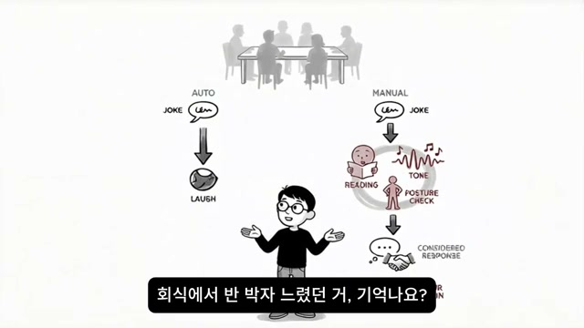
수동 모드 카메라는 그 경계선에서 멈춘다. 노출을 낮추고, 초점을 빛과 그림자 사이에 맞추고, 거기서 한 장을 건진다. 다른 카메라는 절대 못 찍는 한 장을.
화자는 이를 다시 회식 장면에 대입한다. 회식에서 반박자 느렸던 것 — 그때 당신의 뇌는 농담의 내용이 아니라 "사람들 사이의 온도"를 읽고 있었다. 누가 진짜 웃고 있고, 누가 맞추고 있는지. 그게 수동 모드다.
스크린샷에서는 이 차이가 다이어그램으로 정밀하게 시각화된다. 왼쪽 AUTO 경로는 JOKE → LAUGH로 단순하게 연결된다. 오른쪽 MANUAL 경로는 JOKE를 받은 후 TONE 분석, READING(독해), POSTURE CHECK(자세 확인), CONSIDERED RESPONSE(고려된 반응)를 거쳐 최종 반응이 나온다. 이 복잡한 처리가 바로 '반박자'의 원인이다.
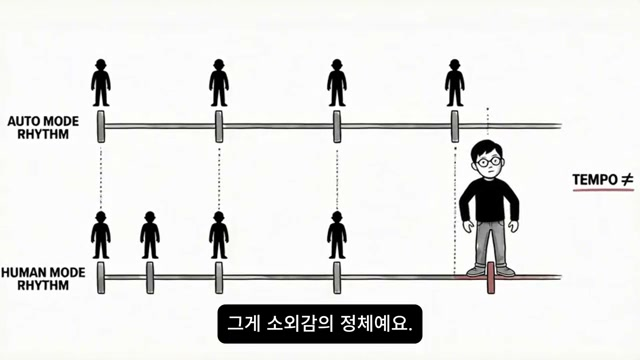
자동 모드가 "웃긴 얘기 → 웃음"으로 끝내는 걸, 수동 모드 뇌는 그 안의 결까지 읽어내는 것이다. 단체 사진에서 어색했던 것도 같다. 자동 모드 카메라들이 "찰칵"하고 끝낼 때, 수동 모드는 "이 순간을 어떻게 담아야 진짜일까"를 한 번 더 묻고 있었던 것이다.
스크린샷에서는 이것이 두 개의 평행선 리듬으로 표현된다. 위 줄에는 "AUTO MODE RHYTHM"이라고 쓰이고 검은 실루엣들이 일정한 간격으로 나란히 서 있다. 아래 줄에는 "HUMAN MODE RHYTHM"이라고 쓰이고 실루엣들의 간격이 약간씩 다르다. 맨 오른쪽에 주인공 캐릭터가 서 있는 위치가 두 리듬 모두와 살짝 어긋나 있으며, 오른쪽에는 "TEMPO ≠"라는 텍스트가 적혀 있다. 자막은 "그게 소외감의 정체예요."
"자동 모드 세상에서 수동 모드로 살고 있으니까, 속도가 안 맞고 리듬이 안 맞고 박자가 안 맞는 거예요."
그러나 속도가 문제가 아니다. 이 카메라만 찍을 수 있는 사진이 있다는 게 핵심이다.
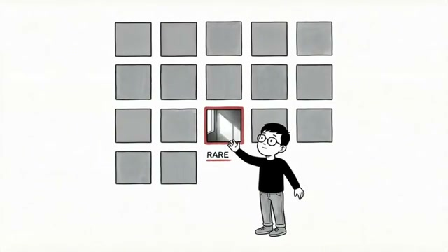
화자는 수동 모드 뇌가 가진 세 가지 능력을 명확히 정의한다:
스크린샷에서는 여러 개의 회색 정사각형 타일들 중 딱 하나의 타일만 붉은 테두리로 강조되어 있고, 그 안에 빛과 그림자가 담긴 사진이 들어 있다. 주인공이 그 타일을 가리키며 서 있고, 하단에는 굵은 글씨로 "RARE"라고 적혀 있다.
"이건 고쳐야 할 버그가 아니에요. 흔하지 않기 때문에 비싼 거예요. 대량 생산 자동 모드 사진이 넘쳐나는 세상에서, 수동 모드로만 잡을 수 있는 장면은 희소하고, 희소한 건 비싸요. 원래 그래요."
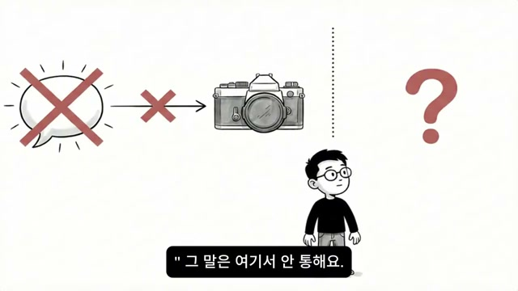
문제는 이 능력을 가지고 있으면서도 "나만 이상하다"는 프레임에 갇혀서 셔터를 한 번도 안 눌렀다는 것이다. 찍지 못한 게 아니라, 안 찍은 것이다. 이상한 카메라라고 생각해서 렌즈 뚜껑을 닫아둔 것이다.
스크린샷에서는 말풍선에 X 표시가 된 채 카메라에 전달되지 못하는 장면이 묘사된다. 오른쪽에는 커다란 물음표(?)가 있어, 렌즈 뚜껑을 여는 방법이 무엇인지에 대한 질문을 시각화한다. 자막은 "그 말은 여기서 안 통해요."
그렇다면 렌즈 뚜껑을 여는 방법은? "자신감을 가져라"는 여기서 통하지 않는다. 그건 수동 모드 카메라에게 자동 모드처럼 찍으라고 말하는 것과 같다. 이 카메라는 속도로 승부하는 카메라가 아니기 때문이다. 방법은 완전히 다른 데 있다.
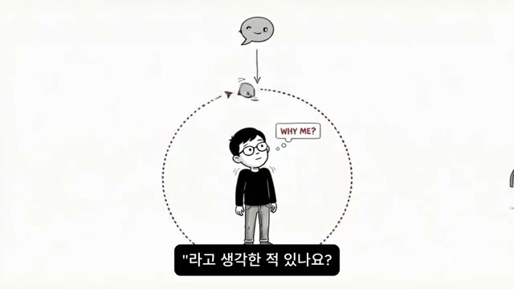
화자는 하나의 질문을 던진다:
"최근에 누군가와 대화하다가, '나는 왜 이런 걸 신경 쓰지?'라고 생각한 적 있나요?"
구체적인 상황들을 나열한다:
스크린샷에서는 주인공이 커다란 종이를 펼치는 장면이 묘사된다. 종이 위에는 폭발 아이콘(불편함/discomfort), 다이아몬드(가치/value), 돋보기(디테일/detail) 세 가지 아이콘이 보인다. 오른쪽에는 닫힌 서랍이 그려져 있어, 이것들이 서랍 안에 접혀 있던 것들임을 암시한다. 하단 자막은 "라고 생각한 적 있나요?"
그때 당신은 이렇게 결론 냈을 것이다: "내가 예민한 거겠지. 나만 유난인 거겠지." 그리고 그 생각을 접어서 서랍에 넣었다. 꺼내봤자 아무도 알아주지 않을 것 같아서.
화자는 그 '유난'을 한번 펼쳐보자고 제안한다. 당신이 신경 쓴 것이 무엇이었는지를 다시 들여다보면:
화자는 말한다: "뭐였든 거기에는 당신만의 관점이 들어있어요. 다수가 못 보는 지점을 당신은 본 거예요. 그게 유난이 아니에요. 그게 수동 모드 카메라가 찍은 사진이에요."
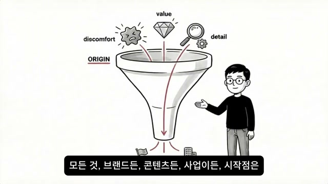
화자는 이 능력의 실질적 가치를 설명한다:
"세상에서 '이 사람은 뭔가 다르다'고 느끼게 만드는 모든 것 — 브랜드든 콘텐츠든 사업이든 — 시작점은 전부 같아요. 남들이 못 보는 것을 본 사람."
스크린샷에서는 깔때기(funnel) 형태의 다이어그램이 등장한다. 상단 입력부에 불편함(discomfort), 가치(value), 디테일(detail) 세 가지 요소가 들어오고, 하단 "ORIGIN" 레이블이 붙은 출구로 모든 것이 모인다. 자막은 "모든 것, 브랜드든, 콘텐츠든, 사업이든, 시작점은"이라고 쓰여 있다.
지금 당신은 그것을 매일 하고 있다. 다만 '유난'이라는 라벨을 붙여서 서랍에 넣어두고 있을 뿐이다. 그 서랍을 여는 건 거창한 결심이 아니다.
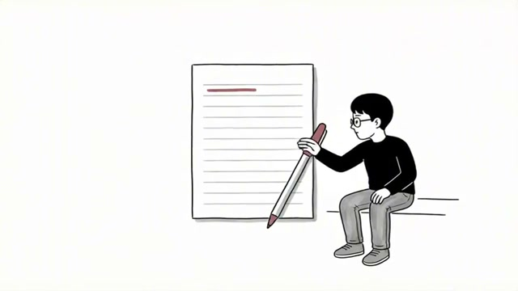
화자는 이제 구체적인 구조를 제시한다. 단, "이렇게 하세요"가 아니라 "이런 일이 벌어지는 과정을 보여드릴게요"라고 전제한다. 해볼지 말지는 당신이 정하는 것이다.
첫 번째: 이질감을 기록한다.
"나만 이상한가 싶었던 순간"을 메모장에 한 줄만 적는 것이다. 길게 쓸 필요 없고, 느낌만 적으면 된다. 화자가 제시하는 예시:
스크린샷에서는 주인공이 커다란 노트에 무언가를 쓰기 시작하는 장면이 묘사된다. 노트 첫 줄에 붉은 밑줄이 그어져 있다. 이 단순한 행동이 렌즈 뚜껑을 여는 첫 번째 단계다.
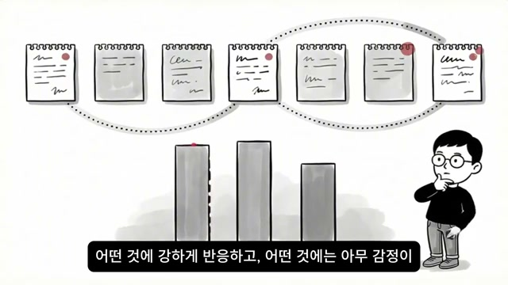
적기 전에는 이런 순간들이 전부 한 단어로 뭉뚱그려져 있다: "예민함."
그런데 적기 시작하면 달라진다. 일주일만 모아보면 거기에 패턴이 보인다:
스크린샷에서는 여러 개의 메모 노트들이 연결된 시계열 형태로 나열되고, 아래에는 막대 그래프가 있어 반응의 강도 차이를 보여준다. 화자 캐릭터가 턱을 괴며 패턴을 분석하는 모습이다. 자막은 "어떤 것에 강하게 반응하고, 어떤 것에는 아무 감정이"라고 쓰여 있다.
화자가 강조하는 핵심: "이건 성격 분석이 아니에요. 당신의 관점이 윤곽을 드러내는 과정이에요." "나만 이상한 것 같다"는 안개 속에 숨어있던 당신만의 렌즈가 모양을 갖추기 시작하는 것이다.
"나는 그냥 예민한 사람이다"라는 흐릿한 자기 인식이 → "나는 이런 지점에서 반응하는 사람이다"라는 구체적인 윤곽으로 바뀐다.
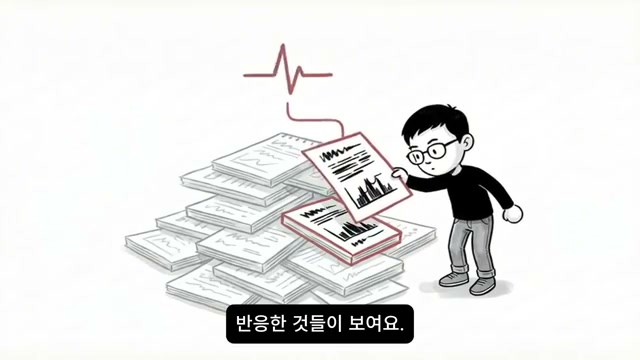
기록이 10개, 20개 쌓이면 그중에 유독 강하게 반응한 것들이 보인다. 대부분은 "좀 불편했다" 수준인데, 몇 개는 강도가 다르다:
"이건 진짜 아무도 신경 안 쓰는데 나는 도저히 넘어갈 수가 없다."
스크린샷에서는 주인공이 쌓여 있는 문서 더미에서 특별히 강하게 반응한 기록 하나를 꺼내는 장면이 묘사된다. 그 문서에는 심장박동(EKG) 형태의 그래프가 그려져 있어 강한 반응을 나타낸다. 자막은 "반응한 것들이 보여요."
그것이 신호다. 수동 모드 카메라가 유독 선명하게 찍은 장면이다.
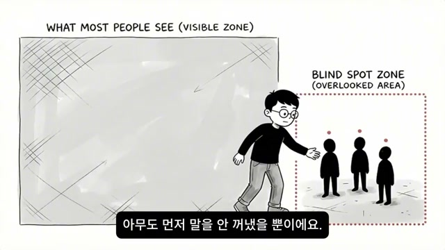
화자는 결정적인 통찰을 제시한다:
"당신이 거기서 불편함을 느꼈다는 건, 같은 걸 불편해하는 사람이 어딘가에 반드시 있다는 뜻이에요. 다만 그 사람들도 '나만 이상한가 보다' 하고 조용히 넘긴 거예요. 아무도 먼저 말을 안 꺼냈을 뿐이에요."
스크린샷에서는 이것이 두 영역으로 나뉜 도식으로 표현된다. 왼쪽 넓은 영역은 "WHAT MOST PEOPLE SEE (VISIBLE ZONE)"이고, 오른쪽 점선으로 구분된 작은 영역은 "BLIND SPOT ZONE (OVERLOOKED AREA)"이다. 주인공이 그 사각지대 영역 안에 있는 세 사람에게 다가가는 모습이다. 자막은 "아무도 먼저 말을 안 꺼냈을 뿐이에요."
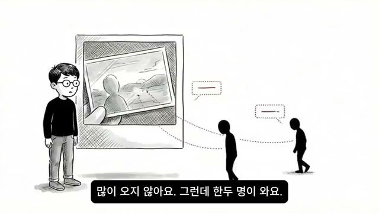
세 번째: 그 기록 중 하나를 밖으로 꺼낸다. 방식은 어떤 것이든 된다:
예를 들어: "이런 거 나만 불편한 건가요?"
스크린샷에서는 주인공이 사진(자신의 관점으로 찍은 장면)을 벽에 걸어놓자, 멀리서 두 명의 실루엣이 다가오는 장면이 묘사된다. 자막은 "많이 오지 않아요. 그런데 한두 명이 와요."
화자는 이 한 문장을 밖으로 꺼내는 순간을 "수동 모드 카메라의 셔터를 처음으로 누르는 것"이라고 표현한다. 그동안 보기만 했던 장면을 처음으로 찍어서 세상에 내놓는 행위다.
그러면 반응이 온다. 처음에는 조용하고 많지 않다. 그러나 한두 명이 온다:
"저도요."
"이거 저만 그런 줄 알았어요."
"이걸 말로 해주는 사람 처음 봐요."
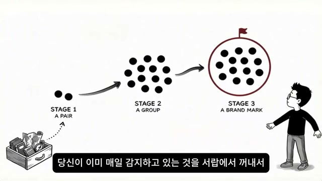
이 반응이 오는 순간 뇌에서 전환이 일어난다. 지금까지 "나만 이상하다"는 신호로 해석되던 그 감각이, "이건 내가 볼 수 있는 것"이라는 신호로 바뀌기 시작한다. 같은 감각이다. 달라진 건 없다. 해석만 바뀌는 것이다.
스크린샷에서는 이 과정이 세 단계로 시각화된다:
자막은 "당신이 이미 매일 감지하고 있는 것을 서랍에서 꺼내서"라고 말한다.
화자의 논리적 전개:
거창한 사업 계획이 아니다. 당신이 이미 매일 감지하고 있는 것을 서랍에서 꺼내서 밖에 놓은 것뿐이다.
"소외감이 줄어드는 게 아니에요. 소외감의 의미가 바뀌는 거예요. '나만 이상한 것 같다'가 '나는 다른 것을 보는 사람이다'로 번역되는 거예요. 이건 감정의 문제가 아니라 구조의 문제예요."
화자는 세 가지 구조를 정리한다:
감정은 그대로인데, 구조가 바뀌면 결과가 달라진다.
지금까지 당신은 "나만 이상하다"는 느낌을 고쳐야 할 결함이라고 생각해 왔을 것이다. 그래서 맞추려고 했다:
그런데 맞출수록 더 이상해지는 느낌이 들었을 것이다.
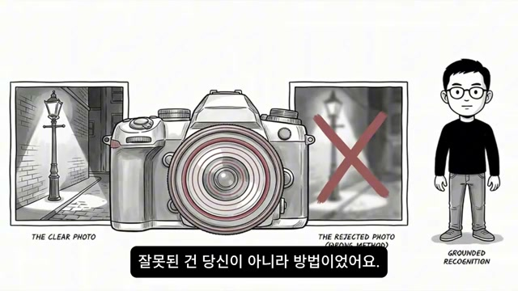
화자는 왜 그랬는지 설명한다:
"수동 모드 카메라에게 자동 모드로 찍으라고 하면, 사진이 나아지는 게 아니라 초점이 나가요. 맞추면 맞출수록 나다운 게 뭔지 점점 모르게 돼요. 그게 제일 아팠던 거예요."
스크린샷에서는 두 장의 사진 옆에 카메라가 서 있는 장면이 묘사된다. 왼쪽은 "THE CLEAR PHOTO" — 선명하게 찍힌 가로등 사진이고, 오른쪽에는 "THE REJECTED PHOTO (WRONG METHOD)" — X 표시가 된 흐릿하고 실패한 사진이다. 오른쪽 화자 캐릭터 옆에는 "GROUNDED RECOGNITION"이라는 텍스트가 있다. 자막은 "잘못된 건 당신이 아니라 방법이었어요."
화자는 단호하게 선언한다:
"잘못된 건 당신이 아니라 방법이었어요."
이 뇌는 남들과 같은 방식으로 작동하지 않는다. 같은 속도로 반응하지 않고, 같은 지점에서 웃지 않고, 같은 것을 보지 않는다. 대신 남들이 절대 찍지 못하는 장면을 찍을 수 있고, 남들이 감지하지 못하는 결을 읽을 수 있다. 그것이 이 뇌의 사양이고, 이 카메라의 존재 이유다.
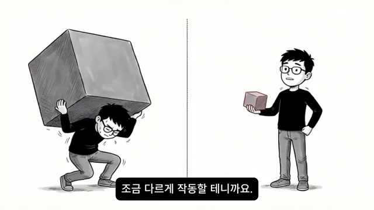
화자는 소외감이 사라지지 않을 수도 있다고 솔직하게 말한다:
"소외감은 사라지지 않을 수도 있어요. 수동 모드 카메라는 자동 모드 카메라들 사이에서 언제나 조금 다르게 작동할 테니까요."
스크린샷에서는 이것이 매우 강렬한 대비 이미지로 표현된다. 왼쪽에는 허리가 굽을 정도로 커다란 바위 같은 짐을 짊어지고 힘겹게 서 있는 주인공, 오른쪽에는 같은 사람이 훨씬 작아진 정사각형 물체를 한 손으로 가볍게 들고 있는 장면이다. 중앙을 가로지르는 수직선이 두 상태를 나눈다.
그러나 그 다름이 결함이 아니라 희소성이라는 걸 알게 되면, 같은 소외감인데 무게가 달라진다.
"짓누르던 것이 들고 다닐 수 있는 것이 돼요."
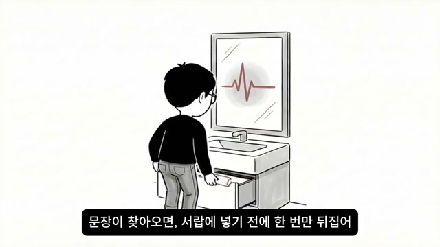
화자는 영상을 시작했던 장면, 화장실 거울 앞으로 돌아간다.
"그때 당신은 화장실 거울 앞에서 생각했어요. '나는 왜 이러지?'"
스크린샷에서는 거울을 보는 주인공의 뒷모습이 묘사된다. 거울에는 심장박동(EKG) 그래프가 보여, 이제 그 '이상한 반응'이 단순한 결함이 아니라 뇌가 살아서 처리하고 있다는 신호임을 암시한다. 자막은 "문장이 찾아오면, 서랍에 넣기 전에 한 번만 뒤집어"라고 말한다.
그러나 이제는 이렇게 볼 수 있다:
"그 반박자 늦은 시간 동안, 당신의 뇌는 남들보다 더 많은 것을 읽고 있었어요. 그게 이상한 게 아니었어요. 그게 이 뇌가 작동하는 방식이었어요."
다음에 또 그 문장이 찾아오면, 서랍에 넣기 전에 한 번만 뒤집어 보라:
"이건 내가 다른 것을 보고 있다는 신호다."
그리고 그 신호를 한 줄이라도 적어 보라. 그것이 셔터를 누르는 행위다. 그 한 장이 당신만의 사진이 된다.
영상은 다음 문장으로 마무리된다:
"이상한 게 아닙니다. 방법이 맞지 않았을 뿐입니다."
마지막 스크린샷에는 흰 배경에 정보 아이콘(ⓘ)만 표시되며, 자막으로 "이 영상은 교양 정보이며 의학적 진단이나 치료를 대신하지 않습니다."라는 면책 문구가 표시된다.
"저 사람은 진짜 웃긴 걸까? 아니면 분위기에 맞추는 걸까?"
— 회식 자리에서 다수와 다른 처리를 하는 뇌의 특성을 보여주는 첫 번째 질문
"이상한 걸 신경 쓰는 나는 뭐지?"
— 감정이 두 겹으로 쌓이는 구조를 대변하는 문장
"나만 이상한 것 같다에서 나는 어딘가 고장난 사람인 것 같다로. 소외감이 아니라 존재 자체에 대한 의심이 되는 거예요."
— 고감도 뇌를 가진 사람들이 빠지는 심리적 함정의 심화 구조
"반박자 느린 게 아니에요. 입력받는 정보의 양이 다른 거예요."
— 영상 전체의 핵심 재해석 문장
"사회성 부족이 아니에요. 고감도 센서를 잠시 끄고 쉬는 시간이 필요한 거예요."
— 혼자 있는 시간에 대한 재정의
"수동 모드에서만 찍히는 사진이 있어요."
— 고감도 뇌의 가치를 가장 압축적으로 표현하는 비유
"이건 고쳐야 할 버그가 아니에요. 흔하지 않기 때문에 비싼 거예요."
— 희소성 논리로 재정의하는 핵심 전환점
"그 유난을 한번 펼쳐볼게요."
— 서랍 속에 접어 넣은 관점을 꺼내는 전환의 제안
"'나도요'가 10명이 되면 팬이에요. 팬이 모이면 커뮤니티예요. 커뮤니티가 되면 브랜드예요."
— 이질감이 사업과 브랜드의 씨앗이 되는 구조적 설명
"소외감이 줄어드는 게 아니에요. 소외감의 의미가 바뀌는 거예요."
— 감정 자체가 아닌 감정의 해석을 바꾸는 것이 핵심임을 강조
"짓누르던 것이 들고 다닐 수 있는 것이 돼요."
— 고감도 뇌의 특성을 받아들인 후의 변화를 가장 시적으로 표현한 문장
"이상한 게 아닙니다. 방법이 맞지 않았을 뿐입니다."
— 영상 전체를 마무리하는 최종 메시지
이 영상은 크게 세 개의 파트로 나뉜다.
1부 — 공감과 묘사 (0:00~5:19): 회식, 단체 사진, 혼자만의 시간, "왜 맨날 혼자야"라는 말 등 고감도 뇌를 가진 사람들이 일상에서 반복적으로 겪는 상황을 세밀하게 묘사한다. 시청자로 하여금 "이게 나의 이야기구나"라는 즉각적인 공감을 이끌어낸다.
2부 — 재해석과 설명 (5:19~8:50): AUTO/MANUAL 카메라 비유를 통해, 그동안 결함으로 여겨왔던 특성이 사실은 '입력 데이터의 양이 다른 것', 즉 사양의 차이임을 과학적·비유적으로 설명한다. 희소성=가치라는 논리로 재정의한다.
3부 — 실천 구조 제시 (8:50~16:50): 단순히 "자신감을 가져라"가 아닌, 구체적인 세 단계 구조(기록 → 번역 → 출력)를 제시한다. 이질감을 적고, 패턴을 읽고, 밖으로 꺼냄으로써 "나만 이상하다"가 "나는 다른 것을 보는 사람이다"로 번역되는 과정을 보여준다.
이 영상의 메시지는 HSP(High Sensitive Person, 고감도 민감자)라는 심리학 개념과 깊이 맞닿아 있다. 다수 중심으로 설계된 사회에서 소수의 고감도 인구가 자신의 특성을 결함으로 여기며 소진되는 현상은 오래된 문제다. 그러나 개인 미디어, 니치 콘텐츠, 1인 브랜드가 주류가 된 현재의 생태계에서는 오히려 이 '이상한' 관점이 강력한 무기가 될 수 있다. "나만 이상한 것 같다"는 느낌을 가진 사람들이 그 감각을 자산화하는 구조를 갖추게 되는 것 — 그것이 이 영상이 제안하는 가장 실용적인 전환이다.
댓글
GitHub 이슈 기반 댓글 시스템입니다.